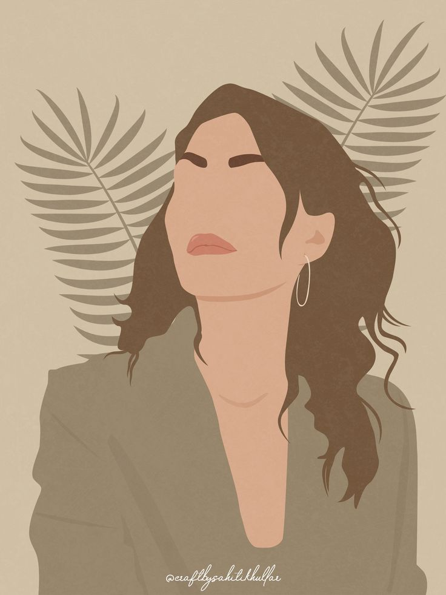

Sobre mí
Soy Analista Programadora con una gran pasión por el desarrollo web y el diseño en general. Disfruto creando soluciones digitales que combinan funcionalidad y estética para brindar la mejor experiencia al usuario.
A lo largo de mi trayectoria, he desarrollado proyectos propios de aplicaciones, lo que me ha permitido aplicar y expandir mis conocimientos en distintas áreas del desarrollo. Me considero una persona proactiva, empática y entusiasta con habilidades en trabajo en equipo, comunicación asertiva y resolución de problemas.
Mi objetivo es seguir creciendo profesionalmente, adquiriendo nuevos conocimientos y experiencias que me permitan evolucionar en el mundo del desarrollo web.